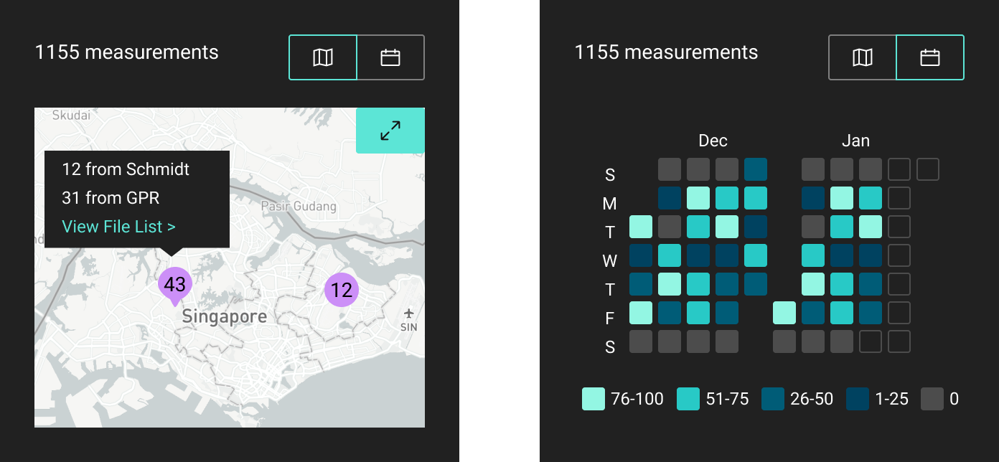
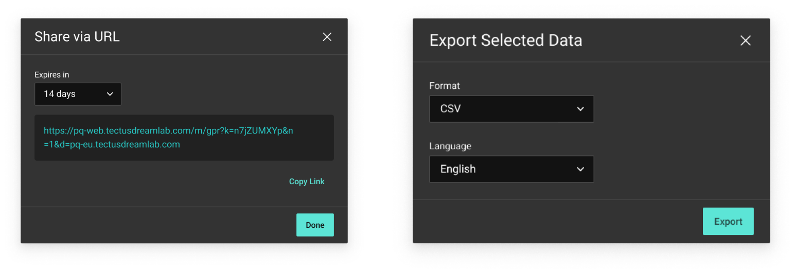
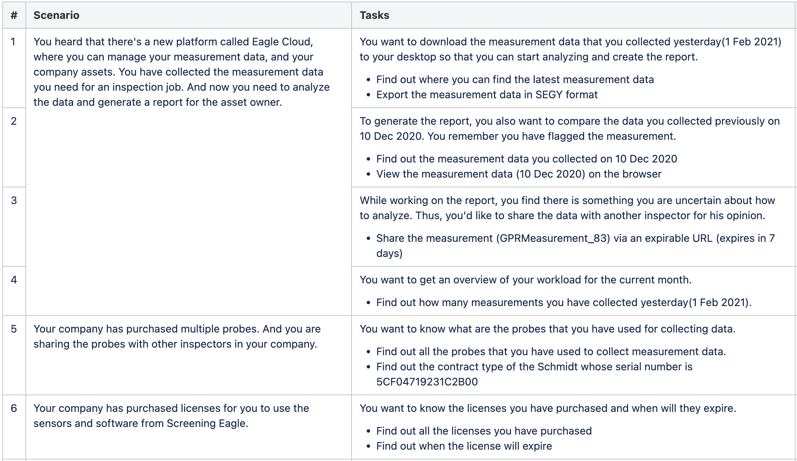
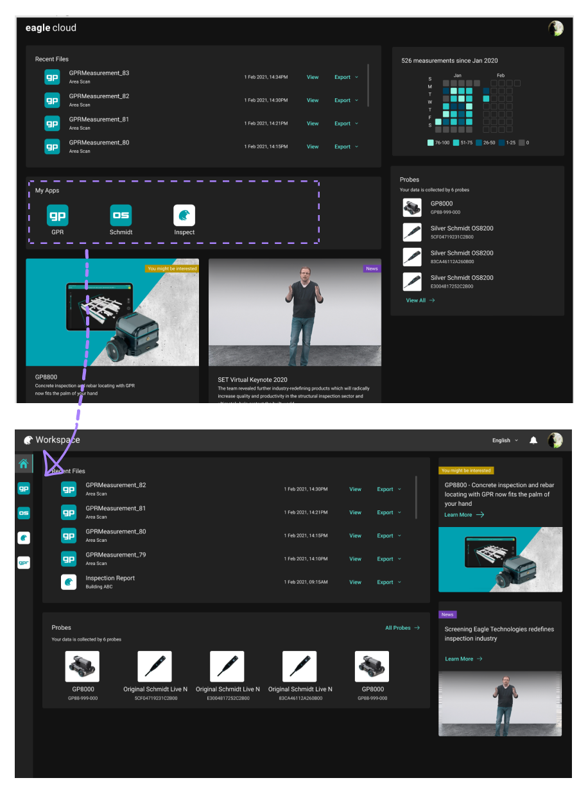
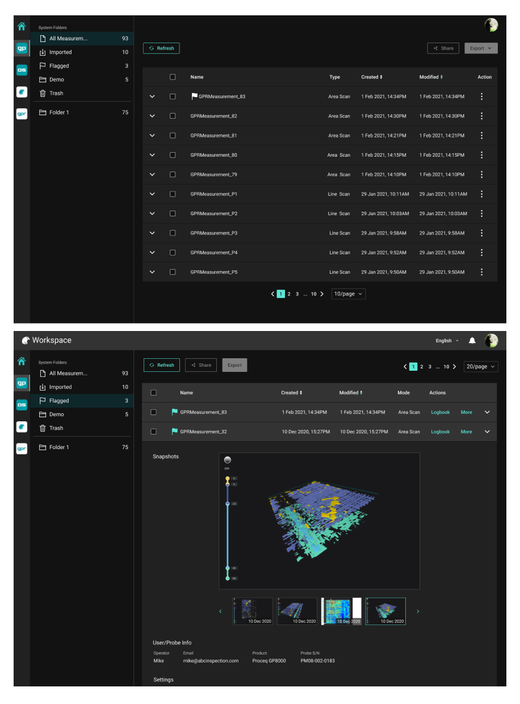

Workspace
UI/UX Design
Period
Role
Skills
Overview

Discovery
Stakeholder Interviews
The Workspace project is a very ambitious project that has a broad vision. Hence, the first step I took was to conduct a few rounds of stakeholder interviews to understand the short-term and long-term goals and the business considerations behind the decisions.
"Workspace is going to be the backbone of our company. Users can manage all kinds of assets on it, including their measurement data, device information, and employee accounts. The first step should be making what we already have accessible to our users."
-- CPO
Reginal Sales, Product Managers & Tech Lead
After getting the project's vision and the scope of the first release, I talked to internal users, i.e., regional sales, sensors' product managers, and tech lead to understand the potential users, needs of the users, and technical constraints.
What's more important is to spread the idea of this new project so that they would inform me when there's an idea/news that might be related.
Let's focus on inspection data management!
From the internal team discussion, I learned that many of our users are either individual inspectors or small inspection companies. Managing device or employee accounts wouldn't be crucial to them. However, with more and more inspection measurements, there was an increasing need to organize the measurement data. Additionally, we didn't have the infrastructure for managing device and employee accounts information. Hence, we decided to focus on inspection data management in the first release.
Research & Findings
User interviews
After gathering the initial requirements, I noticed a few knowledge gaps in my team. We decided to talk to the users in person to narrow the gap. We derived the questions from the 3 main questions:
- What does the data process flow of our user look like?
- What are the data that are more important to our users?
- How do our users feel about the data viewers in our existing products?
On-site Workers & Engineers
From the discussion with the internal team, we learned there are, in general, 2 types of users: on-site workers and civil engineers.


During the recruitment, we tried to have a good mix of both types. And we found 2 on-site workers, 2 civil engineers and 1 doing both for our user interviews.

Findings
- People want to know the context of the measurement data, e.g., the image of the testing element, the weather of the day, settings, etc.
- People want to have a way to group data by time or location automatically so that they can easily find the measurement when they are back at the office.
- People collaborate by sharing the measurement data.
Ideation
Competitive Analysis
We didn't find any direct competitors of the Workspace, meaning competitors who serve the same group of user with similar functionalities. But we did find a few indirect competitors who have similar philosophy as the Workspace. And they are iCloud, Google Suite, Office 365, Adobe Creative Cloud, Autodesk A360.
The analysis was focused on the landing page, and the information architecture design.

Sketches
Some lo-fi wireframes were used for demonstrating ideas and gathering feedback from skateholders and development team.

Design
With the feedback from the team and insights from user interviews, I got an alignment with the team for overall design direction.
Measurement Details
Knowing that the users want to see the context of the measurement data, I worked closely with the product managers of different sensor teams to define the information to be shown in the measurement details.

Event Tracker Widget
The event tracker is a widget that the user can interact with. It allows users to filter the measurements by time or location. Also, it adds a bit of joy to the whole product :)
Export & Sharing
Export and sharing are the two essential parts in users' workflow.
Prototype & Test
Prototype & Usability Testing
Before move to the implementation, I decided to create an interactive prototype with Figma, conduct usability testings with a few users to spot potential usability issues.

For usability testing, I conducted remote, moderated Think Aloud testing over Zoom. I tested around the key tasks I identified earlier in the process, asking the user to find a particular measurement and its related information, asking the user to share and export the measurement, asking the user to find probes and their contract information.
Each task was followed by a SEQ rating. To understand the overall feeling, at the end of the test, I added a SUS survey and had a short discussion with the tester.
81.67
Average SUS score5.83
Average SEQ score of 6 tasks, the 6 tasks hover a average score from 4.67 to 7 (nominal midpoint of 4)I summarized my observation by a rainbow chart.

Design Revisions
Taking what I learned from the usability testing and feedback from design review meetings, I began to make revisions to my design. Here are two examples in this section.
1. Remove the App tiles and use side navbar for navigating between apps.
In the usability testing, we noticed all the testers tried to find the measurement file from Recent Files instead of clicking the app tiles when we asked them to open a measurement file. Also, when we asked about the App tiles, they weren't sure where it would lead them to. Thus, in the new design, I tried to reduce the cognitive load by reusing the side navbar from the data viewer screen. Also, the new position gives the app navigation more prominence as when people browsing a site, they usually start from the top right.
2. Group all actions together and put them at top left.
We also noticed the users overlooked the action buttons on the top right corner in the usability testing. My hypothesis was: the refresh button in teal grabbed the most attention from users - most people scan a webpage from the top left, plus the color is very eye-catching. Hence I decided to put the buttons together so that when users see the refresh button, they would also see the buttons in grey.
Design System
As we were aiming to build a platform and allow different products to provide services for their users. Having a design system that guides designers of different products to come up with designs that give a consistent look and feel as the Workspace is crucial. Hence a big part of the project was focusing on the Design System.

Measuring UX
Since workspace is a pretty large-scale project, we chose to use the HEART framework to measure the user experience.
| Goal | Signals | Metrics | |
|---|---|---|---|
| Happiness | Users find the site helpful and easy to use | Responding to surveys | Net Promoter Score |
| Engagement | Users keep discovering new content/features | Spending more time on the site, Viewing content not related to measurement data |
Average session length, # of page view of non-measurement screens |
| Adoption | Users see the value of the site | Signing up for an account | Registeration rate |
| Retention | Users keep coming back to the site to complete a key action | Staying active in the site | Daily active users |
| Task Success | Users complete their goals quickly and easily | Completing the task without error, | # of error event, Time to share/export |
Result
The Workspace was then luanched in mid of 2021. And we are continuing improving it by adding more functionalities and supporting the integration of other products. A quote from our product manager - "Workspace helps a lot while we are selling our products. The accessibility of data and collaboration functionality have become a unique selling point for our products."